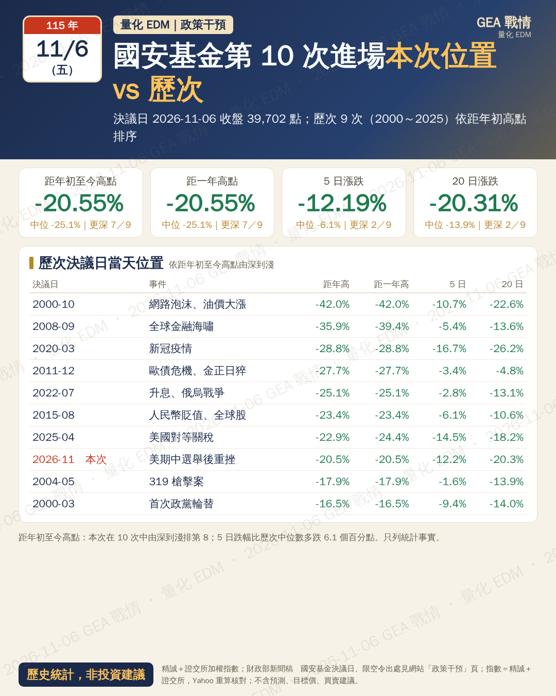
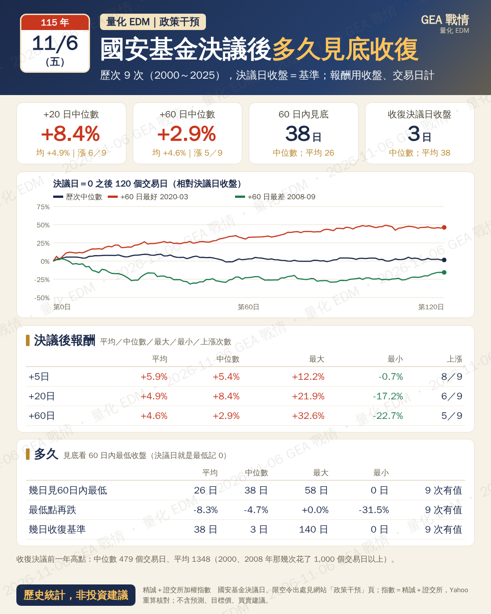
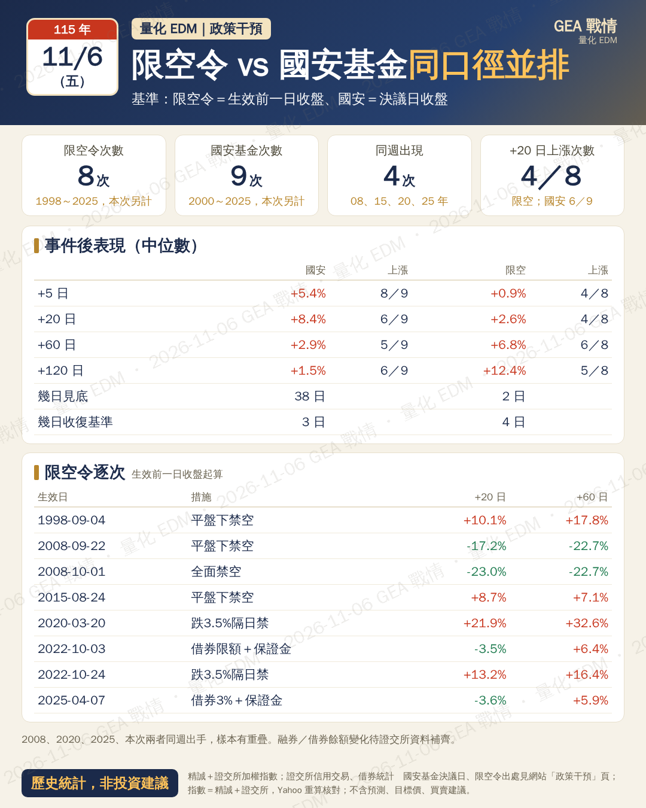

國安基金＋限空令歷史統計 EDM（預覽）
要看的重點
三張：本次位置／決議後多久見底收復／限空令 vs 國安基金
每個數字用 Yahoo 重算核對，核對不過不出檔
頁尾「歷史統計，非投資建議」；只寫統計事實
回到固定頁：
國安基金與限空令歷史統計
政策干預
下載 PNG

核對通過
卡上 48 個數字逐一用 Yahoo 重算比對
政策干預
下載 PNG

核對通過
卡上 34 個數字逐一用 Yahoo 重算比對
政策干預
下載 PNG

核對通過
卡上 36 個數字逐一用 Yahoo 重算比對